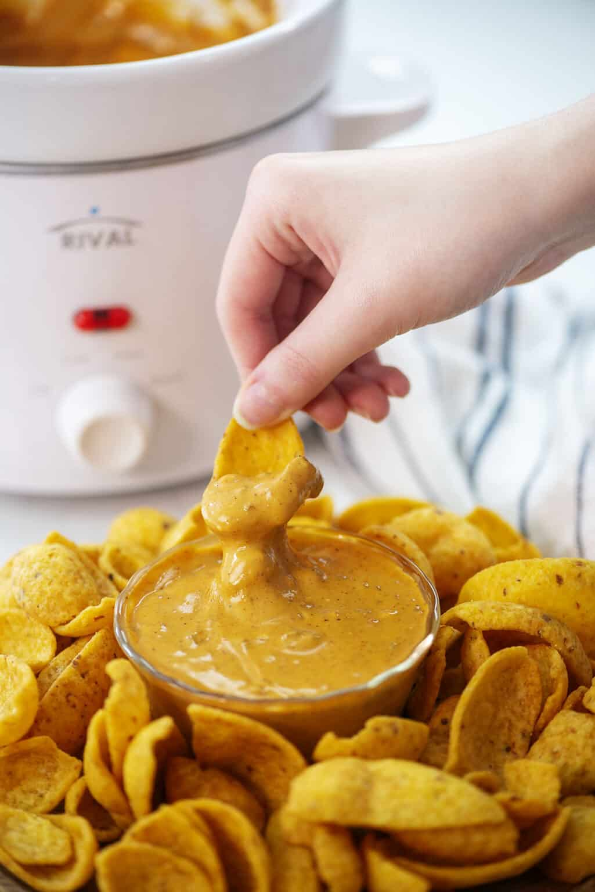
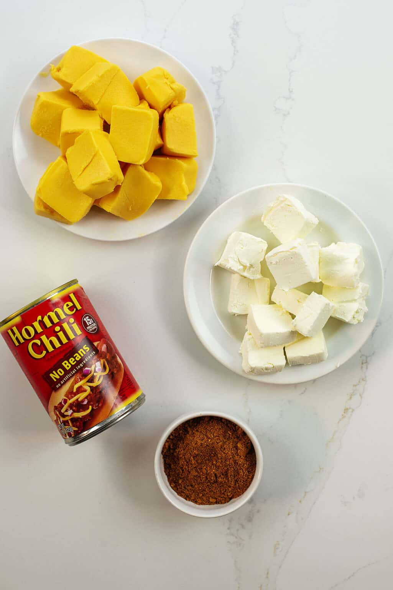

Chili Cheese Dip is a classic football food. The dip is the best part of football season, but why can’t dip be more of a main food group that we eat all year long, on regular days, just because we want to?.
This Chili Cheese Dip is made with just 4 simple ingredients and it turns out so creamy, so cheesy, and it’s just begging you to dive in face first. Or, you know, Frito first. Either way!
